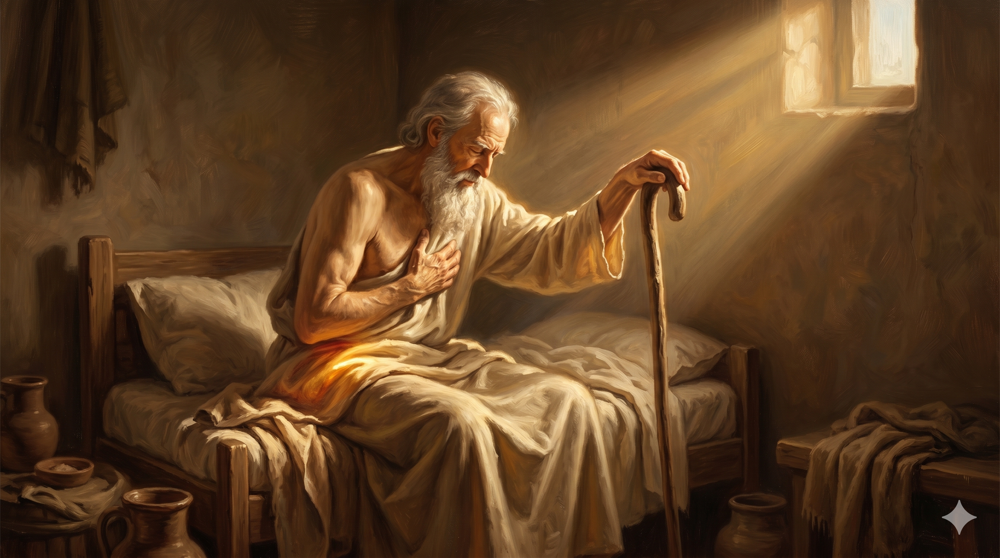

이집트 고센 한구석의 작은 침실, 침상 가에 반쯤 몸을 일으켜 앉은 백사십칠 세 야곱이, 한 손은 자기 지팡이 머리 위에 깊게 얹고 다른 한 손은 가슴께로 모은 채 머리를 깊이 숙인다. 창문으로 비스듬히 들어온 황금빛이 그의 얼굴과 흰 수염을 부드럽게 감싸고, 평생 그를 절뚝이게 한 환도뼈 위로 그 빛이 가장 깊이 내려앉는다 — 이제 그 절뚝거림이 마지막 자세가 되어, 한 사람의 생애 전체가 한 번의 깊은 경배로 모인다.
믿음으로 야곱은 죽을 때에 요셉의 각 아들에게 축복하고 그 지팡이 머리에 의지하여 경배하였으며 … 이스라엘이 침상 머리에서 경배하니라 — 히브리서 11:21 · 창세기 47:31
히브리서의 저자가 야곱의 일생을 한 줄로 요약하기 위해 고른 장면은 놀랍습니다. 그는 야곱의 사다리도, 얍복강의 씨름도, 라반의 집의 이십 년도 고르지 않았습니다. 그가 고른 것은 야곱의 마지막 침상 위 단 한 장면이었습니다 — "그 지팡이 머리에 의지하여 경배하였으며"(히 11:21). 이 한 줄에는 야곱의 평생이 그대로 담겨 있습니다. 야곱은 평생 두 다리로 똑바로 걷지 못한 사람이었습니다. 얍복강의 새벽에 한 분이 그의 환도뼈를 만지신 후로(창 32:25), 그는 평생 절뚝이며 살았습니다. 한때 자기 발로 형의 축복을 가로채던 사람, 한때 자기 지혜로 라반의 양 떼를 빼앗던 사람 — 그 두 발의 사람이, 그날 새벽 이후로는 한 발이 어긋난 채 살아야 했습니다. 그리고 그 어긋난 다리를 평생 떠받친 것이 바로 그의 지팡이였습니다. 그래서 인생의 마지막 시간, 그가 자기 침상에서 마지막 경배를 드리려고 몸을 일으킬 때 — 그가 의지한 것은 자신의 다리가 아니라 그 지팡이 머리였습니다. 평생 그를 부축해 온 그 지팡이가, 마지막 예배의 자세가 되어 그를 받쳐 줍니다.
우리가 한 번 깊이 들여다 보아야 할 것은 이것입니다 — 지팡이는 야곱의 약함의 표시였습니다. 평생 그가 절뚝거리며 살았다는 증거였고, 평생 그가 자기 힘으로 서지 못했다는 증거였습니다. 그러나 신약은 그 약함의 도구를 가리켜 "경배의 자세"라고 다시 불러 줍니다. 곧 야곱의 일생에서 가장 거룩한 순간은 그가 가장 강했던 어느 새벽이 아니라, 그가 가장 약한 자세로 한 분 앞에 자기 몸을 기대는 그 침상의 마지막 시간이었다는 뜻입니다. 그러므로 야곱의 평생은 두 갈래의 길이었습니다 — 두 다리로 자기 운명을 거머쥐려던 청년의 길, 그리고 한 발이 어긋난 채 한 분 앞에 기대어 살아간 노인의 길. 그리고 신약은 우리에게 분명히 알려 줍니다 — 그의 진짜 인생, 그의 진짜 영광은 두 다리로 뛰던 시절이 아니라, 한 발이 어긋난 채 지팡이에 기대어 살았던 그 시간이었다는 사실을.
한 가닥 길게 휘어진 지팡이가 침상 머리맡에 비스듬히 기대어 있다. 지팡이 머리의 손때 묻은 둥근 곡선 위로 한 줄기 따뜻한 빛이 떨어지고, 그 옆 침대보 위에는 평생 절뚝이며 걸어 온 한 사람의 그림자가 길게 누워 있다 — 약함이 결국 가장 거룩한 도구가 되는 침묵의 순간.
우리는 우리의 약함을 자주 부끄러워합니다. 한쪽이 어긋나서 다 잘 되지 못한 것 같은 그 부분, 평생 따라다니며 우리를 절뚝거리게 만든 그 한 가지 — 누군가 모르게 살아왔다 해도 우리 자신은 너무 잘 알고 있는 그 약점. 그러나 야곱의 마지막 장면은 우리에게 한 가지를 분명히 보여 줍니다 — 하나님은 우리의 약함을 치우려고 만지신 것이 아니라, 우리를 자신에게로 기대게 하려고 만지셨다는 것입니다. 야곱의 환도뼈는 평생 회복되지 않았습니다. 그러나 그 회복되지 않은 다리가 그를 평생 한 분 앞에 기대게 만들었습니다. 우리의 한 가지 약점도 마찬가지입니다. 그것은 우리를 망친 흔적이 아니라, 우리를 한 분 앞으로 끌어가는 부드러운 손길의 자국일 수 있습니다. 오늘 당신의 그 어긋난 한 자리, 당신을 평생 절뚝거리게 만든 그 한 가지를 들여다보십시오. 그것이 어쩌면 당신의 가장 깊은 경배의 자세를 배우게 한 그분의 손길이었을지도 모릅니다.
또 하나 — 야곱의 마지막 자세는 우리 모두의 마지막 자세를 미리 보여 줍니다. 우리도 언젠가 이 침상에 누울 때, 우리가 의지할 것은 우리의 두 발이 아니라 평생 우리를 부축해 오신 한 분일 것입니다. 그러므로 그 마지막 한 자세를 위해 우리는 오늘부터 미리 연습해야 합니다 — 우리의 힘이 아니라 그분의 손에 우리의 무게를 기대는 연습. 매일의 작은 약속, 매일의 한 줄 기도, 매일의 한 호흡의 의지함이 결국 한 사람의 마지막 경배를 만들어 갑니다. 야곱이 어느 날 갑자기 침상 위에서 경배의 자세가 된 것이 아닙니다. 그는 얍복강 이후 평생 그렇게 살아온 사람이었습니다. 그러므로 오늘 당신의 작은 절뚝거림은 부끄러움이 아닙니다. 그것은 당신의 마지막 경배가 한 평생을 통해 빚어지고 있다는 거룩한 증거입니다.
하나님은 당신의 다리를 만지신 분입니다 — 절게 하시려고가 아니라, 자신에게 기대게 하시려고.
당신의 평생의 절뚝거림이 마지막 침상에서는 가장 깊은 경배의 자세가 됩니다.
오늘, 어긋난 그 한 자리에 한 분의 손을 다시 얹어 드리십시오.